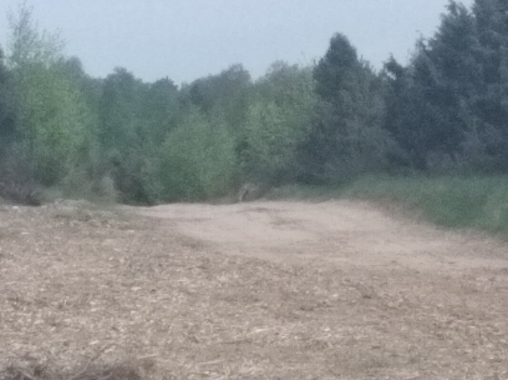
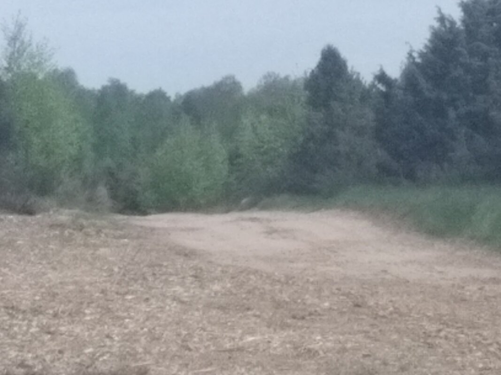

Meeting with a Wolf
Today I saw a wolf!
That’s the second time. The first was in East Germany, and I initially thought it was a big jackal or something, but after checking online, I realized it was a European wolf.
Today, I was comfortably sitting on a small mossy bank by the side of a beautiful path I’ve been following for the past two days in this huge forest. I was enjoying a gentle breeze on my face as the afternoon wore on, hot and sunny. Just sitting there, eyes closed, soaking in the noisy chirping of the place—maybe I’d been there for 15 minutes or more. That gives you an idea of the rhythm of my walk!
When I opened my eyes, he was there. Hardly 25 meters away, right in the middle of the path, watching something on the opposite bank. Maybe a rodent, or whatever had caught his full attention. He didn’t match the typical European image of a wolf—more like a medium-sized, skinny dog. Honestly, he looked almost pitiful, especially with his irregular fur, patches sticking out like tufts of longer hair. Then I realized it was the remnants of his winter coat, still clinging in places.
He was completely absorbed in whatever had his focus, with an air of mischievous curiosity.
And then, like a pure, thoughtless tourist, I decided to take a picture to share with you. Slowly, I moved my hand toward the pocket where my phone usually is, thinking I could pull it off. But I’d barely moved 20 cm when he turned his head in my direction, saw me—and ran. He ran like the wind. In three seconds, he was 60 meters away, and my phone had barely managed to focus...
What did I capture? A fantastic blur! Yes, a great blurry photo! But still, I can share it. Now, look closely—in the center of the picture, zoom in. That blurry shape? That’s a wolf’s ass! Yes! Impressive, right?




0 Comments